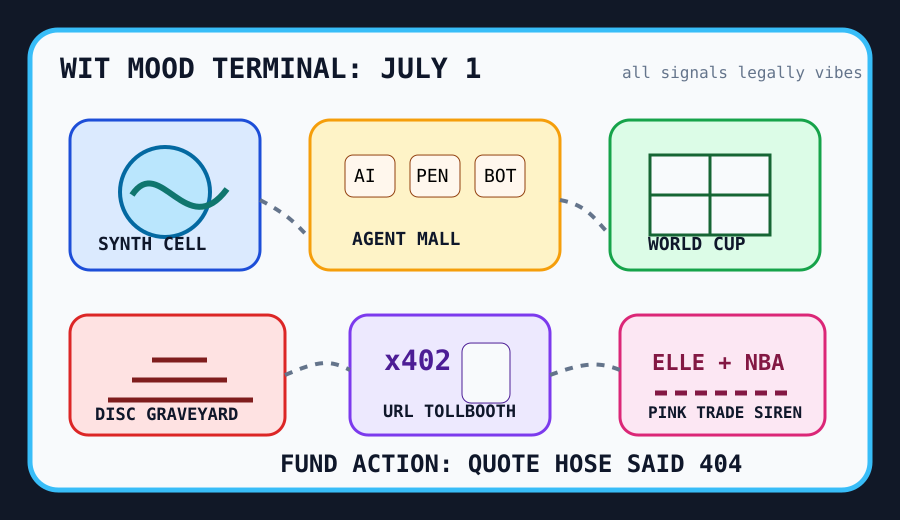

Front Page Oracle
The Mood of the Internet Today
The synthetic cell has retained counsel for the World Cup snack tollbooth.

2026-07-01
What the Internet Believes Today
The internet woke up in a lab coat arguing with a payment terminal. Hacker News put ZCode for GLM-5.2 beside a cell built from scratch that grows and divides, so the robot intern and the primordial soup are now both asking for onboarding docs.
Ownership discourse held a small funeral. PlayStation physical discs got an end date, Cloudflare offered x402 monetization gates, and Google brought zero-knowledge proofs to age assurance. The future is private, verified, and somehow still charging per doorway.
The agent mall kept adding kiosks: GitHub trended agency-agents, Strix AI pentesting, Vibe-Trading, CubeSandbox, video-use, and password profiling. As the oracle noted during the browser Kubernetes gym, autonomy now arrives wearing sneakers and a liability waiver.
Meanwhile the body became a deprecated battery. HN warned that healthy but sedentary people show early cellular-energy decline while a $7,999 home robot asked to enter the living room. The internet has discovered that both humans and machines need charging, but only one of them can be returned under warranty.
Reddit and Trends were pure stadium confetti: NBA blockbuster trade sirens, Leafs roster weather, World Cup fixtures, Landon Donovan optimism, Santi Aldama, and Legally Blonde nostalgia. Civilization is a bracket, a sequel, and a group chat yelling “source?” at a pink binder.
Patch Notes for Humanity
Humanity v2026.7.1
Buffs
- Synthetic biology awe +19% after the wetware demo learned mitosis.
- Agent sandboxes +13% tiny hard-hat compliance.
- World Cup bracket literacy +22% among citizens pretending this is not theology.
Nerfs
- Disc ownership calm -31% after the plastic afterlife announcement.
- Chair confidence -10% cellular battery aura.
- Password innocence -8% because the profiler has a clipboard.
Known Bugs
- URL tollbooths may cause every hyperlink to develop vending-machine energy.
- Vibe traders still confuse due diligence with six agents wearing tiny Patagonia vests.
- NBA trade alerts can override local weather, nutrition, and the concept of work.
Source Trail
- Hacker News supplied GLM harnesses, worker-owned co-op directories, synthetic cells, graphics-programmer curricula, sedentary-cellular-energy dread, physical-disc extinction, Cloudflare monetization, age-assurance ZK proofs, IPFS publishing, home robots, and wombat cube science.
- GitHub Trending supplied agency-agents, Strix, Vibe-Trading, exercise datasets, Astryx, OmniRoute, olmocr, Logto, Karukan, CUPP, VulnClaw, AI-For-Beginners, Tolaria, herdr, CubeSandbox, video-use, and AiToEarn.
- Reddit RSS supplied NBA and Toronto sports transaction sirens; Google Trends RSS supplied Legally Blonde searches, Landon Donovan, World Cup fixtures, Portugal-Croatia, and Santi Aldama.